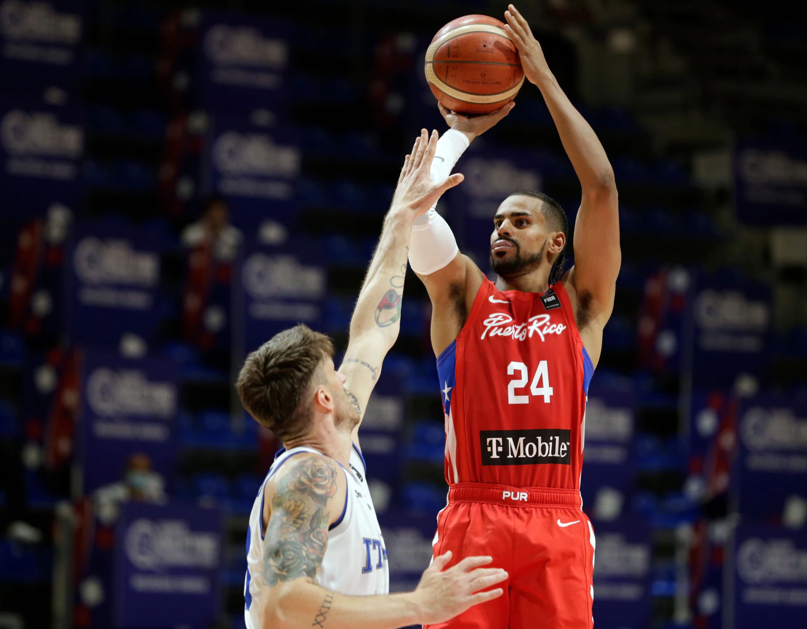

El baloncesto, basquetbol o básquetbol (del inglés basketball; de basket, 'canasta', y ball, 'pelota'), o simplemente básquet, es un deporte de equipo que se puede desarrollar tanto en pista cubierta como en descubierta, en el que dos conjuntos de cinco jugadores cada uno, intentan anotar puntos
